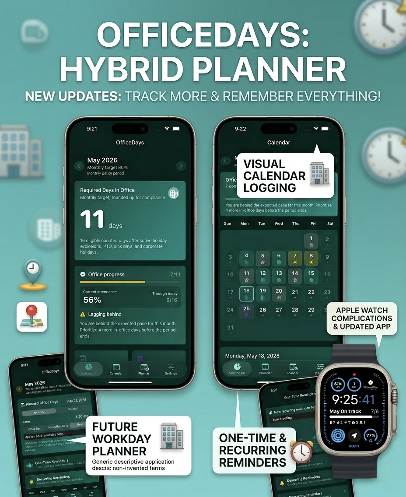
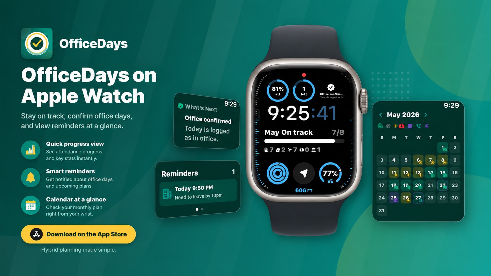
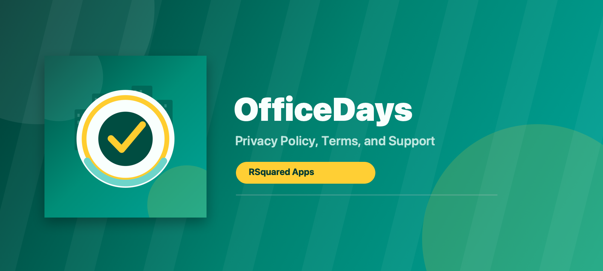

Progress tracking
View your current attendance percentage, required office days, and whether you are on pace for the month.
Now on iPhone and Apple Watch
Plan office days, track attendance progress, and stay on top of reminders with a simple app built for hybrid work.

Why OfficeDays
OfficeDays is designed for people who need a reliable way to plan office days, understand attendance goals, and remember upcoming plans.
View your current attendance percentage, required office days, and whether you are on pace for the month.
Plan upcoming in-office days so you can avoid last-minute scheduling pressure near the end of a period.
Use clear calendar statuses for In Office, WFH, PTO, Sick, and Corporate Holiday days.
Create one-time or recurring reminders for office days, planning windows, and target check-ins.
Quickly check progress, reminders, and office-day status from your wrist.
Your app-entered data stays local on your device. OfficeDays does not require accounts or third-party tracking.
Apple Watch companion
Check your monthly pace, confirm office days, and view reminders at a glance without opening your phone.


Legal and support
Reference information for OfficeDays: Hybrid Planner, an iOS mobile application by RSquared Apps.
RSquared Apps respects your privacy. This Privacy Policy explains how OfficeDays handles information when you use the iOS mobile application.
OfficeDays is designed as a private, on-device productivity tool. RSquared Apps does not collect, store on its servers, sell, rent, share, or transmit user personal data.
OfficeDays does not collect personal data from users.
OfficeDays may save app settings and app-entered information locally on your device so the app can function. This may include:
This information is stored locally on your device. RSquared Apps does not receive it, access it, or transmit it to any external server.
OfficeDays may offer an optional feature that lets you set a work or office location and automatically log an office day when you visit that location.
If you do not enable location-based features, OfficeDays does not use location services.
Because RSquared Apps does not collect or store user personal data on its servers, RSquared Apps does not retain user personal data.
Any app information saved locally on your device remains there until you:
Device backups, if enabled by the user through Apple services, are controlled by Apple and the user’s device settings, not by RSquared Apps.
OfficeDays does not use third-party services for analytics, advertising, tracking, data processing, or cloud storage.
No third party receives user personal data from RSquared Apps through OfficeDays.
RSquared Apps does not sell, rent, trade, share, or disclose OfficeDays user personal data because RSquared Apps does not collect that data.
Because OfficeDays does not require an account and RSquared Apps does not collect user personal data, most privacy choices are controlled directly on your device.
If you contact RSquared Apps by email, your email address and message will be used only to respond to your request.
OfficeDays is not directed to children under 13 years of age.
RSquared Apps does not knowingly collect personal information from children. If you believe a child has provided personal information to RSquared Apps, contact rsquaredsupport@gmail.com, and RSquared Apps will take appropriate action.
RSquared Apps may update this Privacy Policy from time to time. Updates will be posted on this page with a revised effective date.
RSquared Apps
rsquaredsupport@gmail.com
These Terms and Conditions govern your use of OfficeDays: Hybrid Planner, an iOS mobile application developed by RSquared Apps. By using OfficeDays, you agree to these terms.
You agree to use OfficeDays only for lawful, personal, or business productivity purposes.
OfficeDays is intended to help users estimate and track office attendance. Your employer’s policies, official records, and applicable laws remain the authoritative sources for attendance requirements.
OfficeDays, including its name, design, interface, icons, graphics, text, and software, is owned by RSquared Apps or its licensors and is protected by applicable intellectual property laws.
You are granted a limited, non-exclusive, non-transferable license to use OfficeDays on your iOS device in accordance with these terms and Apple’s App Store terms.
OfficeDays does not require user accounts. Because there are no OfficeDays accounts, there is no account deletion process inside the app.
If you need assistance deleting locally stored app data, you may:
For support, questions, privacy requests, or account deletion-related questions, contact:
RSquared Apps Support
rsquaredsupport@gmail.com
RSquared Apps will make reasonable efforts to respond to support requests in a timely manner.
OfficeDays is provided “as is” and “as available,” without warranties of any kind, express or implied, to the fullest extent permitted by law.
RSquared Apps is not responsible for:
To the maximum extent permitted by law, RSquared Apps’ total liability for claims related to OfficeDays is limited to the amount you paid, if any, to use the app.
RSquared Apps may update, modify, suspend, or discontinue OfficeDays or any feature at any time.
RSquared Apps may also update these Terms and Conditions. Updates will be posted on this page with a revised effective date.
These terms are intended to be interpreted consistently with applicable law. Some jurisdictions do not allow certain warranty exclusions or liability limitations, so some provisions may not apply to you.
RSquared Apps
rsquaredsupport@gmail.com